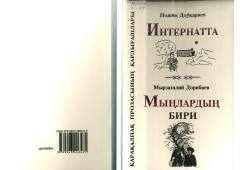

IQoraqalpoq prozasining ilk namunalari jamlangan asarlar to‘plami.
Ushbu kitobga qoraqalpoq prozasining asoschilaridan biri Néjim Däwqaraevning «Internatta» hikoyasi hamda Mırzagali Däribaevning «Mınlardıń biri» povesti kiritilgan. Asarlarda o‘tmishdagi og‘ir turmush tarzi, inson taqdiri va hayotiy sinovlar tasvirlangan. Tarixiy ahamiyatga ega bo‘lgani uchun matnlar o‘z holatida saqlab qolingan.